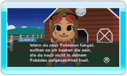
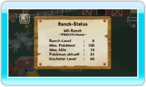

16 |
Schwarzes Brett |
 |

● Gesuchte Pokémon Nachdem du das erste Mal Pokémon von einer Pokémon Diamant-Edition- oder Pokémon Perl-Edition-Karte auf die Ranch übertragen hast, stellt dir Eukalia Gesuchte Pokémon vor, die sie gern auf der Ranch haben möchte. Jede Anfrage von Eukalia gilt allerdings nur für eine bestimmte Zeit und wird nach Ablauf dieser Zeit entfernt.
Gesuchte Pokémon sind meistens Pokémon, die du noch nicht in Pokémon Diamant-Edition oder Pokémon Perl-Edition gefangen hast (basierend auf den Informationen deines Pokédex). Wenn du ein Gesuchtes Pokémon auf die Ranch bringst, wird ein neues Gesuchtes Pokémon angezeigt. Indem du Gesuchte Pokémon fängst, kannst du deinen Pokédex im Laufe der Zeit vervollständigen. Außerdem kannst du mit dieser Funktion auch den Nationalen Pokédex vervollständigen!
Wenn du auf dem Gesuchte Pokémon-Bildschirm auf ein Pokémon zeigst und Hinweis: Gesuchte Pokémon, die du auf die Ranch gebracht hast, werden erst registriert, wenn du das zweite Mal Pokémon auf der Ranch ablegst.
Außerdem kannst du dir Gesuchte Pokémon, die du schon auf die Ranch gebracht hast, ansehen, indem du auf dem Gesuchte Pokémon-Bildschirm auf den gelben Pfeil am unteren Bildschirmrand zeigst und
Wenn du ein Gesuchtes Pokémon auf die Ranch bringst, kann es sein, dass Eukalia mit dir tauschen möchte. Wenn du ein Pokémon mit Eukalia tauschst, erscheint es als eines von ihren auf der Ranch. Das Pokémon, dass du von Eukalia erhalten hast, kannst du auf eine Pokémon Diamant-Edition- oder Pokémon Perl-Edition-Karte übertragen – das Pokémon, das du Eukalia gegeben hast, kannst du allerdings nicht mehr mitnehmen. 
● Ranch-Status Hier kannst du den Ranch-Level, die maximale Anzahl der Miis und Pokémon, die tatsächliche Anzahl der Pokémon und die für den nächsten Level benötigte Anzahl an Pokémon ansehen. |
 drückst, kannst du dir ansehen, wie du dieses Pokémom fangen kannst und welche Bedingungen erfüllt sein müssen. Falls Eukalia mehrere Gesuchte Pokémon anbietet, zeige auf den grünen Pfeil und drücke
drückst, kannst du dir ansehen, wie du dieses Pokémom fangen kannst und welche Bedingungen erfüllt sein müssen. Falls Eukalia mehrere Gesuchte Pokémon anbietet, zeige auf den grünen Pfeil und drücke  |
 |
 |